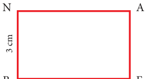
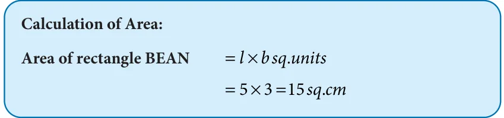
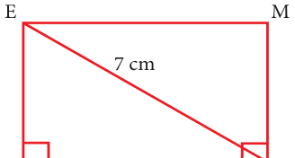
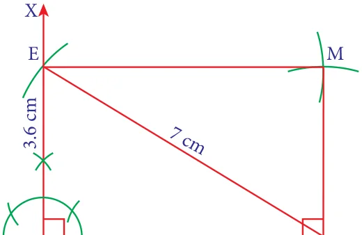
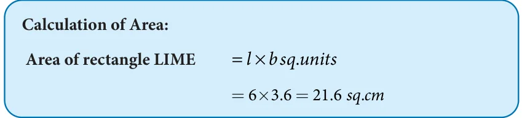

<!DOCTYPE html>
<html lang="en">
<head>
<meta charset="UTF-8">
<meta name="viewport" content="width=device-width,initial-scale=1">
<title>5.15 Construction of a Rectangle — Geometry</title>
<meta name="description" content="Class 8 Mathematics · Geometry · 5.15 Construction of a Rectangle">
<link rel="icon" href="data:image/svg+xml,<svg xmlns='http://www.w3.org/2000/svg' viewBox='0 0 100 100'><text y='.9em' font-size='90'>📘</text></svg>">
<link rel="stylesheet" href="../../../assets/book.css">
<link rel="stylesheet" href="https://cdn.jsdelivr.net/npm/katex@0.16.11/dist/katex.min.css" crossorigin="anonymous">
</head>
<body>
<header class="topbar">
<div class="topbar-in">
  <div class="crumb">
    <span class="c1"><a href="../../../index.html">Library</a> · <a href="../../index.html">Class 8 Mathematics</a></span>
    <span class="c2">Geometry · 5.15 Construction of a Rectangle</span>
  </div>
  <a class="tb-btn" data-nav="prev" href="../../05-geometry/18-construction-of-a-rhombus-5.14/index.html" title="5.14 Construction of a Rhombus">←</a>
  <details class="drawer"><summary class="tb-btn" title="Sections in this chapter">☰</summary>
<div class="drawer-panel"><div class="dh">Geometry</div><a href="../01-chapter-opener/index.html">Chapter opener; 5.1 Introduction</a><a href="../02-congruent-and-similar-shapes-5.2/index.html">5.2 Congruent and Similar Shapes</a><a href="../03-exercise-5.1/index.html">Exercise 5.1</a><a href="../04-the-pythagoras-theorem-5.3/index.html">5.3 The Pythagoras Theorem</a><a href="../05-converse-of-pythagoras-theorem-5.4/index.html">5.4 Converse of Pythagoras Theorem</a><a href="../06-point-of-concurrency-5.5/index.html">5.5 Point of Concurrency</a><a href="../07-medians-of-a-triangle-5.6/index.html">5.6 Medians of a Triangle</a><a href="../08-altitude-of-a-triangle-5.7/index.html">5.7 Altitude of a Triangle</a><a href="../09-perpendicular-bisectors-of-a-triangle-5.8/index.html">5.8 Perpendicular Bisectors of a Triangle</a><a href="../10-angle-bisectors-of-a-triangle-5.9/index.html">5.9 Angle Bisectors of a Triangle</a><a href="../11-exercise-5.2/index.html">Exercise 5.2</a><a href="../12-exercise-5.3/index.html">Exercise 5.3</a><a href="../13-construction-of-quadrilaterals-5.10/index.html">5.10 Construction of Quadrilaterals</a><a href="../14-construction-of-trapeziums-5.11/index.html">5.11 Construction of Trapeziums</a><a href="../15-exercise-5.4/index.html">Exercise 5.4</a><a href="../16-construction-of-special-quadrilaterals-5.12/index.html">5.12 Construction of Special Quadrilaterals</a><a href="../17-construction-of-a-parallelogram-5.13/index.html">5.13 Construction of a Parallelogram</a><a href="../18-construction-of-a-rhombus-5.14/index.html">5.14 Construction of a Rhombus</a><a href="../19-construction-of-a-rectangle-5.15/index.html" aria-current="page">5.15 Construction of a Rectangle</a><a href="../20-construction-of-a-square-5.16/index.html">5.16 Construction of a Square</a><a href="../21-exercise-5.5/index.html">Exercise 5.5</a><a href="../22-summary/index.html">SUMMARY</a></div></details>
  <a class="tb-btn" data-nav="next" href="../../05-geometry/20-construction-of-a-square-5.16/index.html" title="5.16 Construction of a Square">→</a>
  <button class="tb-btn" data-theme-toggle title="Toggle light / dark" aria-label="Toggle light or dark theme">◐</button>
</div>
<div class="progress"><span style="width:75.0%"></span></div>
</header>
<main class="wrap">
<div class="sec-head">
  <p class="eyebrow"><a href="../index.html">Chapter 5 · Geometry</a></p>
  <h1>5.15 Construction of a Rectangle</h1>
  <p class="sec-meta">Textbook pages 51–52 · 6 figures</p>
</div>
<article class="prose">
<p>Let us now construct a rectangle with the given measurements</p>
<ul class="qlist">
<li><span class="mk">(i)</span><span class="lt">length and breadth</span></li>
<li><span class="mk">(ii)</span><span class="lt">a side and a diagonal</span></li>
</ul>
<h3 id="s-5-15-1-construction-of-a-rectangle-when-its-length-and-bre">5.15.1 Construction of a rectangle when its length and breadth are given</h3>
<h4 class="callout-h" id="s-example-5-38">Example 5.38</h4>
<p>Construct a rectangle BEAN with \(BE = 5\) cm and \(BN = 3\) cm. Also find its area.</p>
<h4 class="callout-h" id="s-solution">Solution:</h4>
<figure class="fig side-fig"></figure>
<figure class="fig table-fig"><figcaption>Fig. 5.57</figcaption></figure>
<aside class="sidenote"><p>Rough diagram</p></aside>
<p>Steps:</p>
<ul class="qlist">
<li><span class="mk">1.</span><span class="lt">Draw a line segment \(BE = 5\) cm.</span></li>
<li><span class="mk">2.</span><span class="lt">At B, construct \(BX \perp BE\) .</span></li>
<li><span class="mk">3.</span><span class="lt">With B as centre, draw an arc of radius 3 cm and let it cut BX at N.</span></li>
<li><span class="mk">4.</span><span class="lt">With E and N as centres, draw arcs of radii 3 cm and 5 cm respectively and let them cut</span></li>
</ul>
<p>at A.</p>
<ul class="qlist">
<li><span class="mk">5.</span><span class="lt">Join EA and NA.</span></li>
<li><span class="mk">6.</span><span class="lt">BEAN is the required rectangle.</span></li>
</ul>
<figure class="fig"></figure>
<h3 id="s-5-15-2-construction-of-a-rectangle-when-a-side-and-a-diago">5.15.2 Construction of a rectangle when a side and a diagonal are given</h3>
<h4 class="callout-h" id="s-example-5-39">Example 5.39</h4>
<p>Construct a rectangle LIME with \(LI = 6\) cm and \(IE = 7\) cm. Also find its area.</p>
<h4 class="callout-h" id="s-solution">Solution:</h4>
<p>Given: \(LI = 6\) cm and \(IE = 7\) cm</p>
<figure class="fig side-fig"></figure>
<aside class="sidenote"><p>Rough diagram</p></aside>
<figure class="fig"><figcaption>Fig. 5.58</figcaption></figure>
<p>Steps:</p>
<ul class="qlist">
<li><span class="mk">1.</span><span class="lt">Draw a line segment \(LI = 6\) cm.</span></li>
<li><span class="mk">2.</span><span class="lt">At L, construct \(LX \perp LI\) .</span></li>
<li><span class="mk">3.</span><span class="lt">With I as centre, draw an arc of radius 7 cm and let it cut LX at E.</span></li>
<li><span class="mk">4.</span><span class="lt">With I as centre and LE as radius draw an arc. Also, with E as centre and LI as radius</span></li>
</ul>
<p>draw an another arc. Let them cut at M.</p>
<ul class="qlist">
<li><span class="mk">5.</span><span class="lt">Join IM and EM.</span></li>
<li><span class="mk">6.</span><span class="lt">LIME is the required rectangle.</span></li>
</ul>
<figure class="fig"></figure>
</article>
<nav class="pager"><a class="" data-nav="prev" href="../../05-geometry/18-construction-of-a-rhombus-5.14/index.html"><span class="dir">← Previous</span><span class="t">5.14 Construction of a Rhombus</span><span class="ch">Geometry</span></a><a class="nx" data-nav="next" href="../../05-geometry/20-construction-of-a-square-5.16/index.html"><span class="dir">Next →</span><span class="t">5.16 Construction of a Square</span><span class="ch">Geometry</span></a></nav>
</main><footer class="site">Generated from the source textbook PDFs · text, figures and exercises belong to their respective publishers.</footer><script defer src="https://cdn.jsdelivr.net/npm/katex@0.16.11/dist/katex.min.js" crossorigin="anonymous"></script>
<script defer src="https://cdn.jsdelivr.net/npm/katex@0.16.11/dist/contrib/auto-render.min.js" crossorigin="anonymous"
  onload="renderMathInElement(document.body,{delimiters:[
    {left:'\\(',right:'\\)',display:false},
    {left:'$$',right:'$$',display:true},
    {left:'\\[',right:'\\]',display:true}],throwOnError:false,ignoredTags:['script','noscript','style','textarea','pre','code']})"></script>
<script src="../../../assets/book.js"></script>
<script defer src="../../../../assets/search.js"></script>
</body>
</html>
